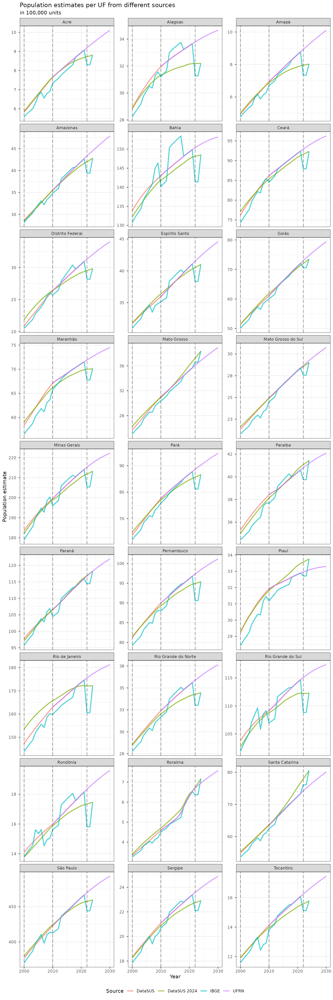

Population estimates comparison
Source:vignettes/articles/Population-estimates-comparison.Rmd
Population-estimates-comparison.RmdOn this article, we will compare the population estimates available
at the brpop package.
Currently, the package present population estimates by municipalities, sex and age groups computed by the DataSUS (Brazilian Health Ministry) old and news estimates and by the UFRN-PPGDEM-LEPP laboratory. The package also have the total estimates computed by IBGE for inter-census years, and population data for Census and population inquiries years.
names_helper <- tibble(
uf_code = c(
"11",
"12",
"13",
"14",
"15",
"16",
"17",
"21",
"22",
"23",
"24",
"25",
"26",
"27",
"28",
"29",
"31",
"32",
"33",
"35",
"41",
"42",
"43",
"50",
"51",
"52",
"53"
),
uf_name = c(
"Rondônia",
"Acre",
"Amazonas",
"Roraima",
"Pará",
"Amapá",
"Tocantins",
"Maranhão",
"Piauí",
"Ceará",
"Rio Grande do Norte",
"Paraíba",
"Pernambuco",
"Alagoas",
"Sergipe",
"Bahia",
"Minas Gerais",
"Espírito Santo",
"Rio de Janeiro",
"São Paulo",
"Paraná",
"Santa Catarina",
"Rio Grande do Sul",
"Mato Grosso do Sul",
"Mato Grosso",
"Goiás",
"Distrito Federal"
),
cap_code7 = c(
1100205,
1200401,
1302603,
1400100,
1501402,
1600303,
1721000,
2111300,
2211001,
2304400,
2408102,
2507507,
2611606,
2704302,
2800308,
2927408,
3106200,
3205309,
3304557,
3550308,
4106902,
4205407,
4314902,
5002704,
5103403,
5208707,
5300108
),
cap_code6 = c(
110020,
120040,
130260,
140010,
150140,
160030,
172100,
211130,
221100,
230440,
240810,
250750,
261160,
270430,
280030,
292740,
310620,
320530,
330455,
355030,
410690,
420540,
431490,
500270,
510340,
520870,
530010
),
cap_name = c(
"Porto Velho",
"Rio Branco",
"Manaus",
"Boa Vista",
"Belém",
"Macapá",
"Palmas",
"São Luís",
"Teresina",
"Fortaleza",
"Natal",
"João Pessoa",
"Recife",
"Maceió",
"Aracaju",
"Salvador",
"Belo Horizonte",
"Vitória",
"Rio de Janeiro",
"São Paulo",
"Curitiba",
"Florianópolis",
"Porto Alegre",
"Campo Grande",
"Cuiabá",
"Goiânia",
"Brasília"
)
)Total population per UF
datasus_pop_uf <- uf_pop_totals(source = "datasus") |>
mutate(source = "DataSUS") |>
filter(uf != "5e")
#> Setting `max_tries = 2`.
#> Setting `max_tries = 2`.
ufrn_pop_uf <- uf_pop_totals(source = "ufrn") |>
mutate(source = "UFRN")
#> Setting `max_tries = 2`.
#> Setting `max_tries = 2`.
ibge_pop_uf <- uf_pop_totals(source = "ibge") |>
mutate(source = "IBGE")
#> Setting `max_tries = 2`.
datasus2024_pop_uf <- uf_pop_totals(source = "datasus2024") |>
mutate(source = "DataSUS 2024")
#> Setting `max_tries = 2`.
#> Setting `max_tries = 2`.
bind_rows(datasus_pop_uf, ufrn_pop_uf, ibge_pop_uf, datasus2024_pop_uf) |>
left_join(names_helper, by = c("uf" = "uf_code")) |>
ggplot(aes(x = year, y = pop, color = source, group = source)) +
geom_line(stat = "identity", alpha = .7, lwd = 1) +
geom_vline(
xintercept = c(2000, 2010, 2022),
alpha = .5,
linetype = "longdash"
) +
scale_y_continuous(
labels = unit_format(accuracy = 1, scale = 0.00001, unit = NULL)
) +
facet_wrap(~uf_name, scales = "free_y", ncol = 3) +
theme_bw() +
theme(legend.position = "bottom", legend.direction = "horizontal") +
labs(
title = "Population estimates per UF from different sources",
subtitle = "in 100,000 units",
color = "Source",
x = "Year",
y = "Population estimate"
)
Total population per capitals
datasus_pop_mun <- mun_pop_totals(source = "datasus") |>
mutate(source = "DataSUS") |>
right_join(names_helper, by = c("code_muni" = "cap_code6"))
ufrn_pop_mun <- mun_pop_totals(source = "ufrn") |>
mutate(source = "UFRN") |>
right_join(names_helper, by = c("code_muni" = "cap_code7"))
ibge_pop_mun <- mun_pop_totals(source = "ibge") |>
mutate(source = "IBGE") |>
right_join(names_helper, by = c("code_muni" = "cap_code7"))
datasus2024_pop_mun <- mun_pop_totals(source = "datasus2024") |>
mutate(source = "DataSUS 2024") |>
right_join(names_helper, by = c("code_muni" = "cap_code7"))
bind_rows(datasus_pop_mun, ufrn_pop_mun, ibge_pop_mun, datasus2024_pop_mun) |>
ggplot(aes(x = year, y = pop, color = source, group = source)) +
geom_line(stat = "identity", alpha = .7, lwd = 1) +
geom_vline(
xintercept = c(2000, 2010, 2022),
alpha = .5,
linetype = "longdash"
) +
scale_y_continuous(
labels = unit_format(accuracy = 1, scale = 0.00001, unit = NULL)
) +
facet_wrap(~cap_name, scales = "free_y", ncol = 3) +
theme_bw() +
theme(legend.position = "bottom", legend.direction = "horizontal") +
labs(
title = "Population estimates per capital from different sources",
subtitle = "in 100,000 units",
color = "Source",
x = "Year",
y = "Population estimate"
)
Session info
sessionInfo()
#> R version 4.5.1 (2025-06-13)
#> Platform: x86_64-pc-linux-gnu
#> Running under: Ubuntu 24.04.3 LTS
#>
#> Matrix products: default
#> BLAS: /usr/lib/x86_64-linux-gnu/openblas-pthread/libblas.so.3
#> LAPACK: /usr/lib/x86_64-linux-gnu/openblas-pthread/libopenblasp-r0.3.26.so; LAPACK version 3.12.0
#>
#> locale:
#> [1] LC_CTYPE=C.UTF-8 LC_NUMERIC=C LC_TIME=C.UTF-8
#> [4] LC_COLLATE=C.UTF-8 LC_MONETARY=C.UTF-8 LC_MESSAGES=C.UTF-8
#> [7] LC_PAPER=C.UTF-8 LC_NAME=C LC_ADDRESS=C
#> [10] LC_TELEPHONE=C LC_MEASUREMENT=C.UTF-8 LC_IDENTIFICATION=C
#>
#> time zone: UTC
#> tzcode source: system (glibc)
#>
#> attached base packages:
#> [1] stats graphics grDevices utils datasets methods base
#>
#> other attached packages:
#> [1] brpop_0.6.3 scales_1.4.0 ggplot2_3.5.2 tibble_3.3.0 dplyr_1.1.4
#>
#> loaded via a namespace (and not attached):
#> [1] gtable_0.3.6 jsonlite_2.0.0 compiler_4.5.1 tidyselect_1.2.1
#> [5] zendown_0.1.0 bitops_1.0-9 tidyr_1.3.1 jquerylib_0.1.4
#> [9] systemfonts_1.2.3 textshaping_1.0.1 yaml_2.3.10 fastmap_1.2.0
#> [13] dtplyr_1.3.1 R6_2.6.1 labeling_0.4.3 generics_0.1.4
#> [17] curl_7.0.0 httr2_1.2.1 knitr_1.50 backports_1.5.0
#> [21] checkmate_2.3.3 desc_1.4.3 bslib_0.9.0 pillar_1.11.0
#> [25] RColorBrewer_1.1-3 rlang_1.1.6 cachem_1.1.0 xfun_0.53
#> [29] fs_1.6.6 sass_0.4.10 cli_3.6.5 pkgdown_2.1.3
#> [33] withr_3.0.2 magrittr_2.0.3 digest_0.6.37 grid_4.5.1
#> [37] rappdirs_0.3.3 lifecycle_1.0.4 vctrs_0.6.5 evaluate_1.0.5
#> [41] glue_1.8.0 data.table_1.17.8 farver_2.1.2 ragg_1.4.0
#> [45] RCurl_1.98-1.17 purrr_1.1.0 rmarkdown_2.29 tools_4.5.1
#> [49] pkgconfig_2.0.3 htmltools_0.5.8.1